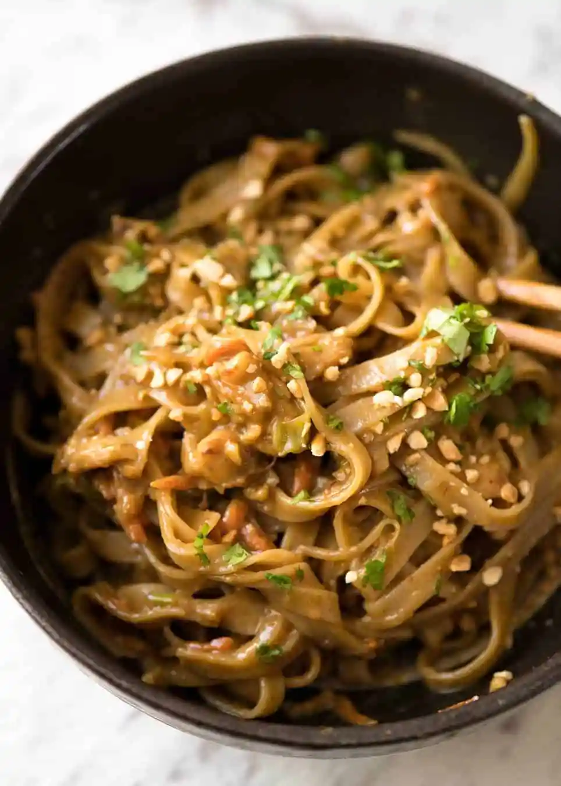

Peanut Chicken Noodles

Next up is one of my favourite recipes, Chicken and bok choi noodles complimented with
a tangy home made peanut sauce.
This is a recipe of my own which is loosely based around a dish that my good friend jack made one time before training.
He showed me a picture of his creation and I couldnt resist having a go myself. The dish has now become a staple in my
weekday dinner rotation! It comes with high reviews from anyone I have served it to, so im sure you will enjoy it just as much!
Ingredients
Sauce
- Honey
- Soy Sauce
- 1 lime
- sesame Oil
- Peanut Butter
- Water
- Chilli flakes
- minced garlic
Main Dish
- Udon Noodles
- Chicken Breast
- Bok Choi
- sesame seeds
- Salt
- Pepper
Instructions
- Make the Sauce: Mix together in a bowl all the ingredients listed.
Make sure they are fully combined. Play with the amount of peanut
butter and water that you add to achieve the desired consistency.
- Prepare the bok choi and chicken: Cut the chicken and bok choi into
bite sized pieces. Season the chicken with salt and pepper.
- Add oil to pan and set the stove to a medium high heat. Once at desired
temperature add the chicken and fry until golden. Only then add the bok choi.
- Fry all together for 5mins then add the sauce to the pan. Fry for another 5 mins.
- Whilst mixture is cooking, add udon noodles to boiling water for time indicated on
packaging. Once cooked, take the chicken off the heat and add the noodles to the chicken.
- Mix chicken and noodles together and serve. Add sesame seeds on top as a garnish.
Bon apetit!